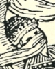
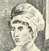

Alison Booth
Vance, Randolph. Wildcats in Petticoats: A Garland of Desperadoes-- Lizzie Merton, Zoe Wilkins, Flora Quick Mundis, Bonny Parker, Katie Bender, and Belle Star. Girard, KS: Little Blue Books, 1930; 1941. Girard, KS: Haldeman-Julius, 1945.
TOC: Lizzie Merton; Doctor Zoe Wilkins; Flora Quick Mundis; Bonnie Parker; Kate Bender; Belle Starr.
Search OCLC WorldCat for this title.
Search Google Books for this title.
Villiers, Elizabeth [i.e., Isabel Mary Thorne]. Love Stories of English Queens. Philadelphia: Mckay; London: Paul, 1924.
Search OCLC WorldCat for this title.
Search Google Books for this title.
Villiers, Elizabeth [i.e., Isabel Mary Thorne]. Our Queen Mothers. London: Melrose, 1936.
Search OCLC WorldCat for this title.
Search Google Books for this title.
Villiers, Elizabeth [i.e., Isabel Mary Thorne]. Women of the Dawn: A Sketch of Early British History. Illustrated. London: Heath, Cranton, 1936.
TOC: The Captive Maid; The First British Martyrs; Our Patron Saints; Days of Desolation; Resurgam; The Gleeman King; Edwin the Bretwalda; Edwin the Christian; Oswald, the Warrior Saint; King Oswy's Queen; The Vision of St. Cuthbert; The Fall of Penda the Heathen ; The Synod at Streaneshalch; The Abbess Hilda; The First English Poet; The Call to St. Cuthbert; In the Days of Elfleda; The Fully Risen Sun; The Writer of Their Histories; Epilogue.
Search OCLC WorldCat for this title.
Search Google Books for this title.
Vincent, Arthur, ed. Lives of Twelve Bad Women: Illustrations and Reviews of Feminine Turpitude Set Forth by Impartial Hands. London: Unwin; Boston: Page; New York: Brentano's, 1897. London: Unwin, 1911.
TOC: Alice Perrers; Alice Arden; Moll Cutpurse; Frances Howard; Barbara Villiers; Jenny Diver; Teresia C. Phillips; Elizabeth Brownrigg; Elizabeth Canning; Elizabeth Chudleigh; Mary Bateman; Mary A. Clarke.
Chapter titles: A. Vincent: Alice Perrers, Favorite of King Edward III; A.H. Coppinger: Alice Arden, Murderess; C. Andrews: Moll Cutpurse, Thief and Receiver; G. Martin: Frances Howard, Countess of Somerset; A. Kalisch: Barbara Villiers, Duchess of Cleveland; C. Andrews: Jenny Diver, Pickpocket; G. Burgess: Teresia C. Phillips; E. Stubbs: Elizabeth Brownrigg, Cruelty Personified; W.G. Waters: Elizabeth Canning, Imposter; W.G. Waters: Elizabeth Chudleigh, Duchess of Kingston; A. Vincent: Mary Bateman, “The Yorkshire Witch"; W.G. Waters: Mary A. Clarke.
-
The Countess of Somerset
-
Alice Arden
-
Mary Frith
-
Barbara Villiers
-
Teresia Constantia Phillips
-
Elizabeth Brownrigg
-
Elizabeth Canning
-
Duchess of Kingston
-
Mary Bateman
-
Mary Anne Clarke
Search OCLC WorldCat for this title.
Search Google Books for this title.
Vizetelly, Edward. The Warrior Woman. London: Treherne, 1902.
Search OCLC WorldCat for this title.
Search Google Books for this title.